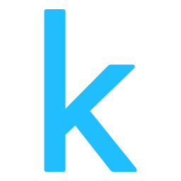
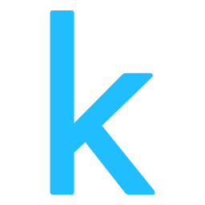

Lead Product and Techincal Intern @ IdeasFWD
At the start of 2021, I was fortunate enough to team up with Joshua Murphy, Founder and CEO of IdeasFWD. IdeasFWD is a young and small start-up self-described as "more than a communications firm; but a movement to challenge the status quo and give power back to the people."
Joshua hired me as a Lead Techincal Intern at the beginning of January, quickly extending my role to a Lead Product and Technical Intern. We've been working together along with a small team in developing a mobile-focused project management application. While I am not at liberty to divulge too much information about the project, my responsibilities thusfar have been in product-and-development-centric research and analytics, application prototyping, mockups, and wireframing all through the use of Figma, promoting a psuedo agile weekly sprint structure, overseeing a separate web-based form of our application, and establishing an application pitch deck.
Despite the prevalence of COVID-19, the project has proven to be a great way to flourish and grow my communication and leadership skills, as I have worked hard towards understanding client requirements and translating them into application features. The experience gained from designing and building this real-world application has proven to be excellent in so many facets of my software and programming principles, and I am excited to be a continued and valued part of the team.
Check out IdeasFWD here!


 
